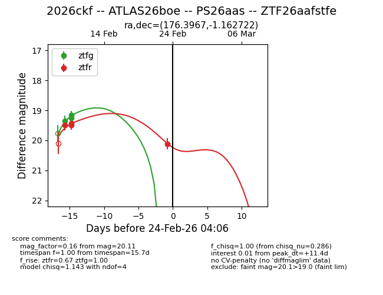
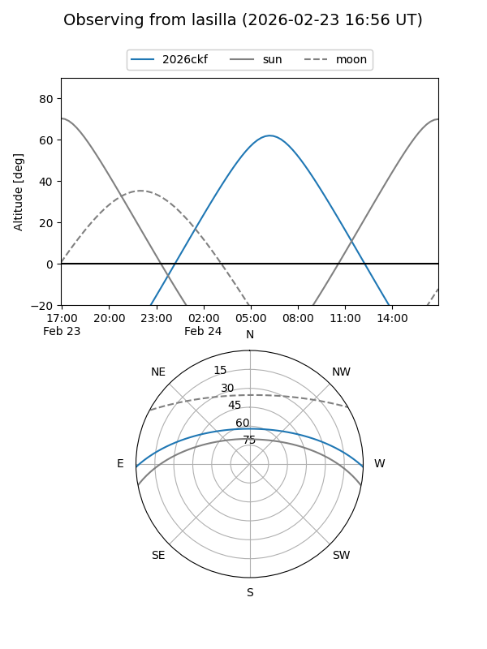
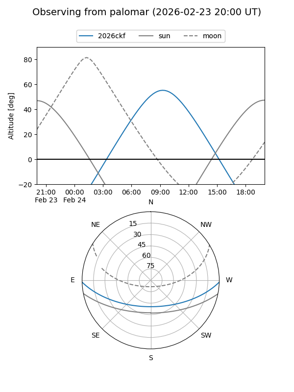

2026ckf
Target 2026ckf at 2026-02-24 09:08
Aliases and brokers:
FINK: link
Lasair: link
ALeRCE: link
TNS: link
YSE: link
alt names
ZTF26aafstfe (ztf,fink_ztf)
2026ckf (tns,yse)
ATLAS26boe (atlas)
PS26aas (panstarrs)
Coordinates:
equatorial (ra, dec) = 176.3967,-1.16272
equatorial (HMS+DMS) = 11:45:35.22,-01:09:45.80
galactic (l, b) = (271.0356,+57.57283)
Flags:
Photometry:
last ztfg=19.16, ztfr=20.11
3 ztfg, 4 ztfr detections
Lightcurve

Visibility


Additional plots